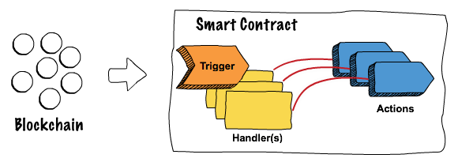

+++
title = "Project Dovetail™"
linkTitle = "home"

+++

{{< blocks/cover title="Project Dovetail™" image_anchor="top" height="full" color="orange" >}}
<div class="mx-auto">
	<a class="btn btn-lg btn-primary mr-3 mb-4" href="{{< relref "about/" >}}">
		Learn More <i class="fas fa-arrow-alt-circle-right ml-2"></i>
	</a>
	<a class="btn btn-lg btn-warning mr-3 mb-4" href="docs/source-code/">
		Source <i class="fab fa-github ml-2 "></i>
	</a>
	<p class="lead mt-5">
	<h1>Making smart contracts smarter</h1></p>
	<div class="mx-auto mt-5">
		{{< blocks/link-down color="dark" >}}
	
</div>
{{< /blocks/cover >}}


{{% blocks/lead color="primary" %}}
Project Project Dovetail™ by **TIBCO LABS™** 

Developing blockchain solutions with today’s technology is challenging given the lack of tooling and standardization. Project Dovetail™ by TIBCO LABS™ addresses these issues by providing a graphical interface for modeling smart contracts, making them easier to write, visualize, test, and audit, all without deep programming experience.

{{% /blocks/lead %}}


{{% blocks/doctxt color="white" %}}

Logic is abstracted from low-level code, and contracts can be developed for different blockchain stacks with little or no code. On-chain and off-chain computation can become more seamless, time to market is improved, and the risk of technology lock-in is reduced. Project Dovetail makes your smart contracts smarter.



{{% /blocks/doctxt %}}


{{< blocks/section color="dark" >}}

{{% blocks/feature icon="fas fa-book" title="Get Started" url="docs/getting-started/" %}}
Let’s start your Dovetail journey! 
{{% /blocks/feature %}}

{{% blocks/feature icon="fa-flask" title="Labs" url="docs/labs/" %}}
Labs provide you with guides, tutorials and code samples and will help you work through building and deploying Dovetail smart contracts.
{{% /blocks/feature %}}

{{% blocks/feature icon="fas fa-box-open" title="Source Code" url="docs/source-code/" %}}
The whole Project consists of the some sub-projects as separate repos.
{{% /blocks/feature %}}

<div class="mx-auto mt-5">
		{{< blocks/link-down color="info" >}}
</div>

{{< /blocks/section >}}


{{< blocks/section >}}

{{% blocks/feature icon="far fa-comments" title="Contact us!" url="community/" %}}
Reach us for more details, or engage us today !
{{% /blocks/feature %}}

{{% blocks/feature icon="fab fa-github" title="Contributions welcome!" url="https://github.com/TIBCOSoftware/dovetail" %}}
We do a [Pull Request](https://github.com/TIBCOSoftware/dovetail/pulls) contributions workflow on **GitHub**. New users are always welcome!
{{% /blocks/feature %}}

{{% blocks/feature icon="fab fa-twitter" title="Follow us on Twitter!" url="https://twitter.com/hashtag/TIBCOLabs?f=live" %}}
For announcement of latest features etc...
{{% /blocks/feature %}}

{{< /blocks/section >}}

